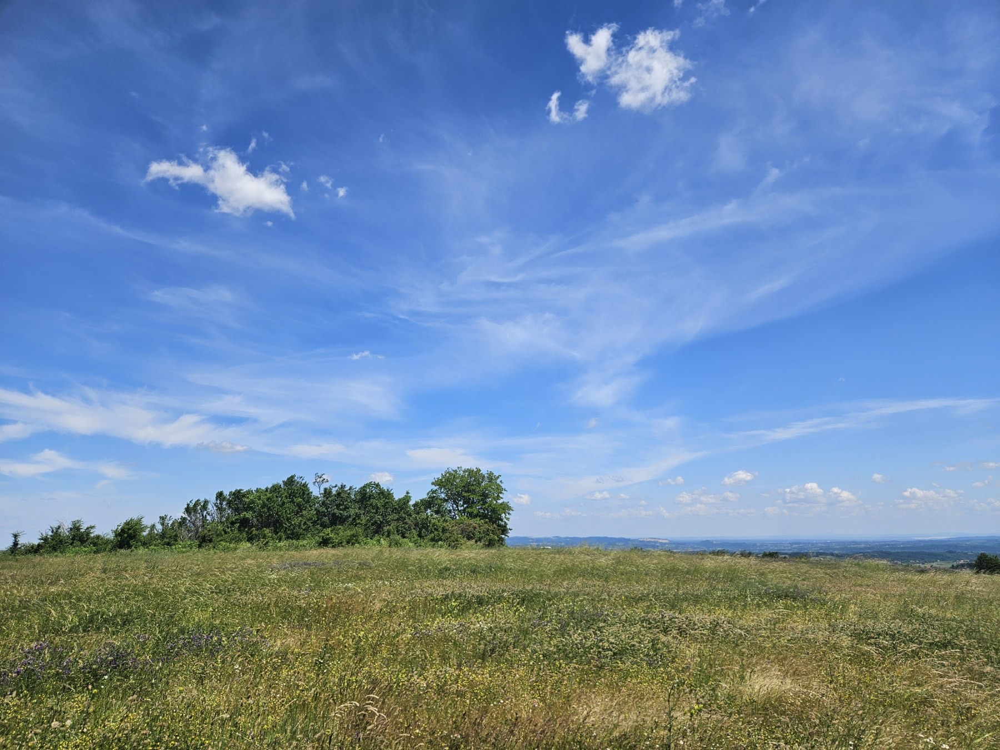
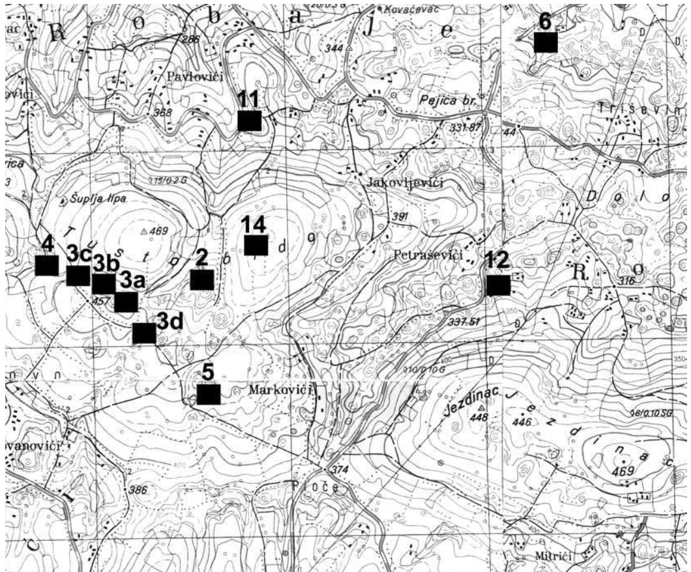
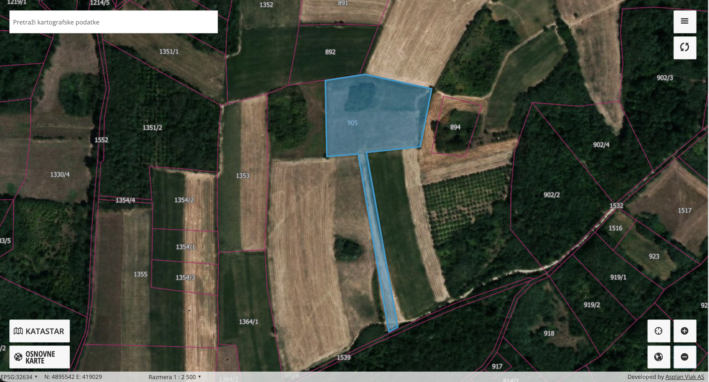

Svetinja zatočena u šumi — čeka da ustane iz pepela
Na istočnom vrhu Tustog brda, iznad sela Robaje u opštini Mionica, leže ostaci crkve porušene u Drugom svetskom ratu — i tragovi ljudskog prisustva koji sežu sve do bronzanog doba.
"Na istočnom vrhu Tustog brda, po priči V. Mijovića, nalaze se ostaci stare crkve razrušene u Drugom svetskom ratu. Očuvani ostaci su u gustom rastinje, dimenzija 15 × 6 m, visine 1 m. Prisutna je velika količina kamena i opeke."
— Crnobrnja & Radivojević, Arheo. pregled SAD br. 1 (2003), str. 77 · lokalitet "Crkvine", RobajeTusto brdo zatvara Golubačko polje sa juga. Kraški predeo obilje karakateričnih oblika — vrtača, kamenih humki i starih šuma — vekovima je skrivao i čuvao tragove prošlih civilizacija. Lokalni meštani su znali za crkvu i, poštujući sveto mesto, nikada nisu obrađivali taj deo zemlje. Taj deo parcele ostao je pod šumom kao tiha, nesvesna straža nad svetinjem.
Od bronzanodobskih humki do porušene crkve — Tusto brdo krije slojeve istorije koji sežu više od tri milenijuma unazad.
Još 1892–93. M. Valtrović i Đ. Jovanović opisali su praistorijsko groblje u Robajskoj šumi na šumovitoj glavici: kamene bobije (~1 × 12 m), pokojnik na pripremljenoj postelji. U humci koju su meštani zvali Glavica nađen je peščarski bat kod nogu; u drugoj, jugoistočno, bronzana igla s prekrhanom ušicom (0,182 m). Iste godine beleže i bobije na Tustom brdu, u livadi Jevrema Bojnovića. Iskopavanja 2003. na lokalitetu Tusto brdo – Ravne vrtače — kompleks tri vrtače s kamenim humkama na obodima — vezuju humke za kulturnu grupu Belotić–Bela Crkva.
Valtrović 1892–93 · Jovanović 1892 · Garašanin 1951 · Crnobrnja & Radivojević 2003U neposrednoj okolini Tustog brda evidentirano je više groblja. Robajsko groblje kod Petraševića nosi nadgrobne ploče s ornamentikom interpretiranom kao tip antropomorfnog krsta, datovane u XV–XVI vek. Staro groblje zasеoka Mijovići, smešteno unutar Robaja (x — 7418,800; y — 4897,125; z — 350), sadrži starije amorfe nadgrobne spomenike poput onih na Bukovačkom i Mađarskom groblju — ponegde poremećene mlađim ukopima, datirane u XIII–XVI vek. Obližnja groblja u Bukovcu sadrže iste tipove ploča — svedočanstvo kontinuiranog hrišćanskog prisustva kroz čitav srednji vek.
Crnobrnja & Radivojević, 2003 · lokaliteti 9, 10, 12Dimenzije crkve 15 × 6 m (proporcija 2,5:1) ukazuju na moguće utemeljenje u doba zrele Raške škole. Detaljnija analiza i mogući prozori osnivanja — u odeljku Šta znamo o crkvi.
Arhitektonska analiza proporcija · Crnobrnja & Radivojević, 2003Na Beluškom brdu, u selu Mratišići, lokalna predanja govore o turskom naselju na zapadnoj strani brda. Do pre pedesetak godina, pri obradi njiva, na površinu su izlazili kamen, opeka i crep. Pominje se i slučajan nalaz zlatnika. Ovaj lokalitet svedoči o osmanskom prisustvu u neposrednoj blizini Tustog brda u XVII–XVIII veku.
Crnobrnja & Radivojević, 2003 · lokalitet 13 "Beluško brdo"Valjevski episkop Grigorije Nikolić je 1705. rukopoložio Milisava Milinkovića i dodelio mu parohiju sa centrom u Paunama, kojoj su pridružena sela Robaje i Šušeoka. Centar parohije bila su Paune — Robaje je bilo deo te parohije bez sopstvene registrovane crkve. Ovo je prva arhivska potvrda da je Robaje tada pripadalo organizovanoj hrišćanskoj zajednici.
Živanović, 2011 · Pavlović M. — Istorijat Eparhije, Crkvena opština ŠabacProtokol Valjeve eparhije iz 1735. ne pominje ni svetinju na Tustom brdu ni posebnu crkvu u Robajama. Robaje se pojavljuje samo kao deo parohije sa centrom u Paunama — potvrda da tada nije bilo aktivne crkve ni u selu ni na brdu.
Istorijski arhiv Valjevo, Glasnik 32, 1998Po šerijatskom pravu i „Omarovom ugovoru", hrišćanima je bila zabranjena gradnja novih crkava, ali je obnova na starim temeljima bila dopuštena — ako nova građevina ne prekorači stari trag. Tokom 1790-ih, pod upravom umerenog Hadži Mustafa-paše u Beogradskom pašaluku, fermani za obnovu izdavani su lakše. Verujemo da je crkva na Tustom brdu tada obnovljena kao brvnara na srednjovekovnim temeljima. Zapis paroha paunskog Dragana iz 1806. potvrđuje da je svetinja tada bila u upotrebi.
Šerijatsko pravo · „Omarov ugovor" · Paroh paunski Dragan · zapis 1806.Popis crkava u Valjevskom okrugu iz 1836. za čitavu paunsku parohiju beleži samo jednu crkvu — Hram Roždestva Jovana Krstitelja u Paunama (br. 26): kamena građevina u dobrom stanju, obnovljena 1834. s pomoću Knjaza Miloša. Ni crkva na Tustom brdu ni posebna crkva u Robajama nisu pomenute. Budući da je crkva na brdu bila u upotrebi 1806., verovatno je razorena tokom ili neposredno posle gušenja Prvog srpskog ustanka 1813.
Đokić i Nadoveza, 2021Tokom Drugog svetskog rata pokrenuta je izgradnja crkve na Tustom brdu. Početkom juna 1944. kapetan Neško Nedić, komandant Valjevskog korpusa, organizovao je izgradnju crkve na Tustom brdu — između sela Mratišić i Robaja. Crkva je zamišljena kao zadužbina Trećeg srpskog ustanka i Ravnogorskog pokreta. Gradnji je prisustvovao Dragomir Vuletić (1919–2010), kasniji upravnik Doma Draže Mihailovića u Čikagu, koji je o tome ostavio pisani trag. Posle oslobođenja, rad je obustavljen. Ostaci su dokumentovani 2003. na lokalitetu „Crkvine": dimenzije 15 × 6 m, visina 1 m, s velikom količinom kamena i opeke.
Živanović, 2011 · Samardžić M. — Sloboda, 10. feb. 2019. · Vuletić D. (pogledi.rs, jan. 2019) · Crnobrnja & Radivojević, 2003U periodu komunizma, zemlja na kojoj se nalaze ostaci crkve nacionalizovana je i postala deo parcele od gotovo 17 hektara — sa neobičnim oblikom granica. Tokom decenija, ta parcela je stekla oko 20 suvlasnika. Deo s crkvom nije se obrađivao — šuma koja ga pokriva bila je nenamerna, ali možda providonosna zaštita ostataka.
Katastarski podaci · opština MionicaU okviru Arheološke naučne škole Robaje 2003., organizovane od strane Istraživačke stanice Petnica, tim pod vođstvom Adam N. Crnobrnje i Miljanе Radivojević sproveo je sistematsko rekognosciranje. Pored praistorijskih humki, dokumentovani su ostaci crkve na lokalitetu "Crkvine" (br. 14). Rad je objavljen u Arheološkom pregledu Srpskog arheološkog društva 1 (Beograd, 2006).
Crnobrnja & Radivojević, Arh. pregled SAD 1 (2003/2006), str. 71–77Nakon više od 80 godina, pokrenut je projekat vraćanja svetog mesta na Tustom Brdu. Prve konkretne pravne i vlasničke korake napravili smo tokom maja 2026. Zemlja je pronađena, vlasnik identifikovan, predugovor potpisan. 28. septembra 2026. završena je overa ugovora, parcela je u novom vlasništvu — i na putu da se izdvoji i pokloni Srpskoj Pravoslavnoj Crkvi.
Aktuelni projekat · septembar 2026.Crkva na Tustom brdu nije ostala samo u sećanju meštana — njeni tragovi postoje i danas, dokumentovani i arhivski i naučno.
Dokumentovani 2003. godine: ostaci dimenzija 15 × 6 metara, visine do 1 metar, skriveni u gustoj vegetaciji na istočnom vrhu Tustog brda. Velika količina kamena i opeke potvrđuje solidnu građevinsku konstrukciju.
Lokalitet "Crkvine" (br. 14) zaveden je u naučnu literaturu u radu: Crnobrnja A.N. & Radivojević M., Arheološka karta Bukovca i okoline, Arheološki pregled Srpskog arheološkog društva, br. 1, Beograd 2003/2006, str. 71–77.
Podatak o crkvi i njenom rušenju potekao je od V. Mijovića, lokalnog kazivača, i potvrđen uvidom u teren. Meštani koji su znali za crkvu svesno su ostavili taj deo zemljišta neobrađenim — zemlja je čuvala uspomenu na svetinju.
Po predanju meštana, crkva na Tustom brdu bila je posvećena Svetom Arhangelu Mihailu. Ovo predanje nije potvrđeno pisanim izvorima. Verujemo da bi istraživanje ostataka crkve moglo doneti odgovor i na ovo pitanje.
Dimenzije 15 × 6 m daju proporciju tačno 2,5:1 — zlatni standard zrele Raške škole (sredina 13. veka, doba kralja Vladislava i Uroša I). U srpskom graditeljstvu temelji su bili najsvetiji deo: kasniji obnavljači su gotovo uvek zidali na starim temeljima kako ne bi „pomerali žrtvenik" — pa dimenzije govore o vremenu prvog ucrtavanja plana, a ne poslednje obnove.
Tri moguća prozora osnivanja:
1. XIII vek (najverovatnije) — Zrela Raška škola, 1230–1270. Proporcija 2,5:1 je tada bila standard. Susedna groblja datovana u XIII–XVI vek potvrđuju aktivnu hrišćansku zajednicu u istom periodu.
2. XVI–XVII vek — Obnova Pećke patrijaršije (od 1557). Srpski graditelji su tada svesno kopirali raške uzore iz 13. veka, gradivši skrivene crkve u zabitima.
3. Kraj XVIII veka — Predustaničke obnove (1791–1804), kada je dozvoljeno obnavljanje porušenih svetinja — isključivo na starim crkvištima.
Kako preciznije datirati: Najstariji sloj krije se u dubini temelja — malter od živog kreča i tucane opeke ukazuje na 13–14. vek. Oblik oltarske apside (polukružna = Raška škola; petostrana = kasniji Moravski stil) i odnos naosa prema priprati mogu pokazati da li je crkva produžavana u kasnijim ciklusima obnove.
Nedaleko od crkve, na istom brdu i u Robajskoj šumi, još od 1892. beleže se bronzanodobske kamene humke (~2000–1200. p.n.e.) — što ukazuje na ritualnu važnost ovog prostora kroz milenijume. Hrišćanske crkve su kroz istoriju često podizane upravo na ranije svetim mestima.

Put do obnove crkve nije samo duhovni — on prolazi kroz katastarske knjige, suvlasničke sporazume i administrativne procese. Svaki korak je važan i neophodan.
Zemlja na kojoj se nalazi crkva deo je velike parcele neobičnih granica, površine skoro 17 hektara — nacionalizovane tokom komunizma. Sama lokacija crkve iznosi oko 11.600 m².
Tokom decenija, parcela je stekla oko 20 suvlasnika. Za formalno odvajanje dela sa crkvom potrebna je saglasnost svih suvlasnika — složen, ali savladiv proces uz dobru volju zajednice.
Vlasnik dela parcele na kome se nalazi crkva je identifikovan i dogovor je postignut. Predugovor je potpisan uz kaparu 29. maja 2026.
Blokada je skinuta, overa ugovora završena 28. septembra 2026. — parcela je sada u novom vlasništvu. Sledi izdvajanje dela sa crkvom i poklon Srpskoj Pravoslavnoj Crkvi.
Sledeći korak: geometar meri tačan deo parcele za crkvu i priprema elaborat za formalno izdvajanje. Potom taj deo ide kao poklon Srpskoj Pravoslavnoj Crkvi.
Dok administracija teče, mogu početi terenska istraživanja — pronalaženje tačnih temelja crkve ispod šumskog pokrivača. Zemlja čuva tragove koji čekaju da budu otkriveni.

Svaki potpisani dokument, svaki administrativni korak i svaki dan rada na terenu — deo su jednog cilja: da crkva na Tustom brdu ponovo stoji.
Postignut je dogovor sa privatnim vlasnikom dela parcele na kome se nalaze ostaci crkve. Pregovorima je definisana cena i uslovi prenosa.
Formalizovana je kupoprodaja potpisivanjem predugovora uz uplatu kapare. Pravni okvir za prenos je uspostavljen.
Katastar je skinuo blokadu sa parcele, overa kupoprodajnog ugovora je završena 28. septembra 2026. — parcela je sada u novom vlasništvu. Time je zatvoren put od predugovora do pravnog prenosa.
Geometar će izmeriti tačan deo za crkvu i pripremiti elaborat za formalno izdvajanje iz veće (17ha) parcele — preduslov za poklon SPC.
Za formalno izdvajanje dela parcele potrebna je saglasnost svih ~20 suvlasnika veće parcele. Uz dobru volju zajednice, ovaj korak je savladiv.
Dok administrativni procesi teku, možemo početi terenska istraživanja — pronalaženje tačnih temelja crkve ispod šumskog pokrivača. Ostaci su dokumentovani ali precizni temelji još nisu mapirani.
Kada se deo parcele sa crkvom formalno izdvoji, prenosi se kao poklon Srpskoj Pravoslavnoj Crkvi — čime se stvara pravni i institucionalni okvir za obnovu svetinje.
Izgradnja nove crkve na temeljima stare — sveto mesto vraćeno zajednici, dostupno svima koji potiču ili se osećaju vezani za ovaj kraj.
Overa završena 28.9.2026. · Parcela u novom vlasništvu · Sledi izdvajanje i poklon SPC
Proces je složen i trajaće mesecima. U međuvremenu, svaka vrsta podrške pomaže — savetodavna, stručna ili jednostavno širenje vesti.
Podržite obnovu →Crkva na vrhu Tustog brda nije crkva samo jednog sela. Ona stoji na mestu prema kome su se nekad sticale staze iz osam okolnih sela — neka od njih crkvi su bliža nego udaljenim zaseocima samih Robaja.
Te staze su zarasle zajedno sa crkvom. Osam decenija šiblja i tišine. Ali put koji je jednom bio iskrčen ne nestaje — on čeka ispod korenja, u sećanjima starih koji znaju ko je kudom hodio do svetinje.
Obnova crkve na Tustom brdu nije samo pitanje kamena i krečnjaka. To je pitanje: hoće li se staze ponovo otvoriti? Hoće li sela oko Tustog brda ponovo imati put kojim se stiže do zajedničke svetinje — i bukvalno, i u najdubljem smislu te reči?
Crkva se gradi jednom. Staza se čisti svake godine. Pozivamo sve koji prepoznaju ovo mesto — iz sela oko Tustog brda, ili ma gde da su odrasli — da se pridruže. Ne kao gledaoci. Kao oni koji zavrću rukave i krče put napred.
Pejzaž koji čeka obnovu — pogled na svetilište i lokaciju crkve iz vazduha i sa tla.